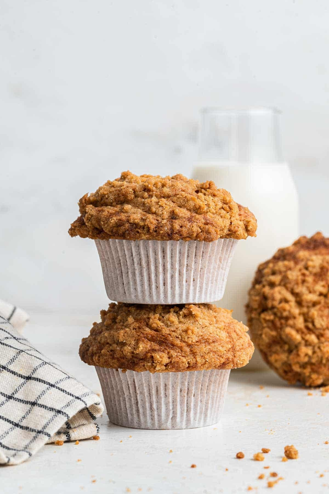

About Purelistic
Purelistic Vegan Catering is a family business focused on creating homemade vegan food and drinks for people interested in health, wellness, and trying new foods.
The idea for Purelistic Vegan Catering connects to our family's first business, Purelistic Health and Beauty, a skincare and body-care company.
The goal is to expand the Purelistic brand by connecting health and wellness with food. We believe that exploring different foods can be both enjoyable and educational.

Our Approach
We focus on homemade vegan food and creating menu options that make plant-based eating approachable. Our cafe and catering concept is designed for people who want to become more health conscious while still enjoying flavorful food and drinks.